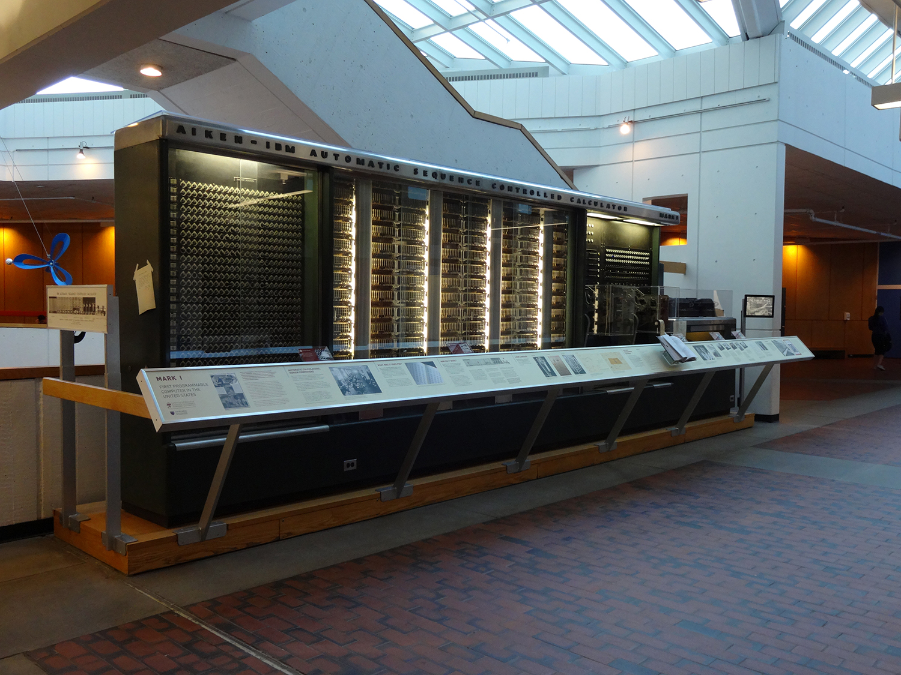
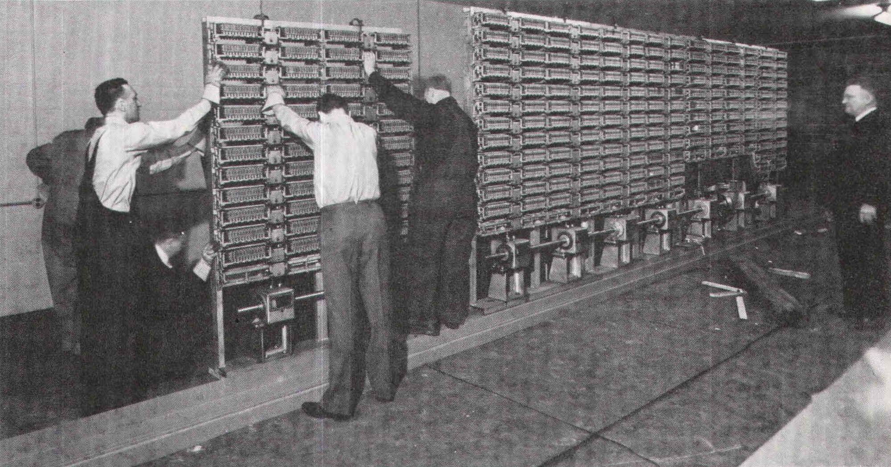

Bilgisayarların Gelişim Aşamaları
|  |
 |
| Resim1: Harvard Üniversitesinde segilenen Mark 1'in büyük bir parçası |
Resim2: Mark 1 üzerinde çalışan 3 bilgisayar operatörü |
Halk arasında genel olarak ilk bilgisayar abaküs kabul edilir. Yine halk içinde ilk bilgisayarı abaküs değilde hesap makinesi kabul edenlerde vardır. Nitekim Blaise Pascal’ın muhasebeci olan babasına yardım amaçlı icat ettiği makine ilk hesap makinesi örneği olarak gösterilebilir.
Bilim dünyasında ise bu her iki aletinde ilk bilgisayar dan uzak olduğu düşünülmekte ve ancak ilk bilgisayarın atası olarak kabul edilmektedir.
İlk bilgisayarın temelini ise fark makinesi oluşturmaktadır. Babbage adlı bilim adamı İngiliz devletinin parasal desteği ile yapmıştır. Bu makine mantıksal işlem birimi, veri depolama birimi, giriş çıkış üniteleri kullanmayı planlıyordu. Bu makine buhar gücü kullanarak otomatik olarak çalıştırılacak ve diğer hesap yapan makinelerden daha fazla fonksiyona sahip olacaktı. Bu özellikleri ile fark makinesi birebir günümüz bilgisayar fonksiyonlarına benzemektedir. Güçlü bir hesap makinesi olduğu gibi basit bir bilgisayar gibidir.
Modern bilgisayar mimarisinin başlangıcı ise kuşkusuz matematikçi George Boole’nin bulup kendi adını verdiği boole cebir sistemi ile başlamaktadır. Bu sistem 0 ve 1 den oluşan oluşmaktaydı ve günümüz bilgisayar endüstrisinin ana yapısını oluşturmaktadır.
Bilgisayar endüstrisinin oluşmasını sağlayan olay ise 1890’da Amerika nüfus sayımında kullanılan Mark-1 adlı cihazdır. Bu cihaz kartları delerek bilgileri işleyebiliyor. Delikli kartları tekrar okuyabiliyor ve tekrar kullanabiliyordu. Bu cihaz sayesinde seçim sonuçları değişik parametreye göre düzenlenip incelenebildiği gibi sayımı sonuçlandırma işlemini dörtte bir oranında düşürmüştü.
Mark 1 yarı otomatiktir yani insan kontrolüne ihtiyaç duyan devasa mekanik makineydi. Ayrıca Mark-1 elektronik bir cihaz olmamasına rağmen insan müdahalesi olmadan bilgileri işleyen ilk makine oldu. Mark-1 saniyede 5 işlem yapabiliyordu. 18 m uzunluğunda ve 2,5 m yüksekliğinde idi.
Mark 1 cihazın sahibi Amerikalı istatistikçi Herman Hollerith bu süreçten sonra Tabulating Machine Company adı şirketi kurarak üretimine devam etmiş ve daha sonra başka bir şirketle birleşerek IBM adını almıştır. Dolayısıyla ilk bilgisayar ne zaman kim tarafından icat edildi sorusuna 1890 yılında Herman Hollerith tarafından icat edilmiştir diyebiliriz.
Fahat günümüzdeki bilgisayarların temelini oluşturan ilk elektronik bilgisayar 1945 tarihinde Amerika’da yapılmıştır. 2. dünya savaşında füzelerin atış koordinatlarının hesaplanması için geliştirilen cihazın adı ise ENIAC olarak tarihe geçmiştir. Bu cihaz bilgisayarın temelini oluşturduğu gibi bilgisayarların zaman içindeki gelişimini ilerleyen yıllarda daha da önemli seviyelere ulaşmasını sağlayacaktır. Özellikle transistör ile entegre bellekler oluşturulması ile bilgisayar çağı başlayacaktır.
|
First Generation |
Second Generation |
Third Generation |
Fourt Generation |
Fifth Generation |
| Technology Used |
Vacuum tube |
Translator |
IC |
VLSI or microprocessor |
Biochip |
| Programming Language |
Machine Language |
Assembly Language |
High Level Language |
4GL(Problem Oriented) |
Natural Language |
| Speed |
Mili-Seconds |
Micro Second |
Nano Second |
Pico Second |
More than Femto Second |
| Primary Memory |
Magnetic Core Memory |
Magnetic Core Memory |
Semiconductor Memory |
Semiconductor Memory |
- |
| Speed, Capability |
Very Less |
Less |
Moderate |
High |
Much higher |